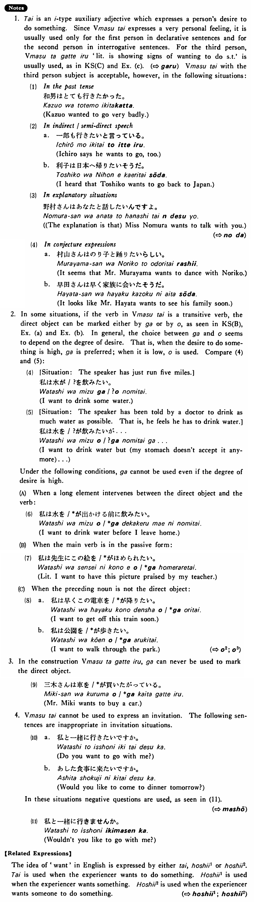

たい (B. 441)
- (ksa).
- 私は日本へ行きたい・たいです。
- I want to go to Japan.
- (ksb).
- 僕は今ピザを・が食べたい・たいです。
- I want to eat pizza now.
- (ksc).
- 鈴木さんはアメリカへ行きたがっている・います。
- Mr. Suzuki is showing signs of wanting to go to America. / Mr. Suzuki wants to go to America.
- (a).
- 僕は冷たいビールを・が飲みたい。
- I want to drink a cold beer.
- (b).
- 今日は何を・が食べたいですか。
- What do you want to eat today?
- (c).
- 三木さんは車を買いたがっている。
- Mr. Miki wants to buy a car.
